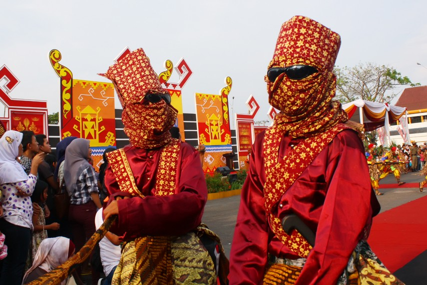

Tempat Wisata
-
way kambas
Taman Nasional Way Kambas (TNWK) adalah taman nasional perlindungan gajah yang terletak di daerah Lampung tepatnya di Kecamatan Labuhan Ratu, Lampung Timur, Indonesia. Selain di Way Kambas, sekolah gajah (Pusat Latihan Gajah) juga bisa ditemui di Minas, Riau. Gajah Sumatra (Elephas maximus sumatranus) yang hidup di kawasan ini semakin berkurang jumlahnya.
Lokasi : kecamatan Labuhan Ratu, Lampung Timur
Makanan Khas
-
seruwit

Seruit merupakan sambal yang cocok untuk teman makan nasi, khususnya di Kabupaten Way Kanan. Namun, sambal seruit juga terdapat di seluruh Lampung karena merupakan salah satu tradisi di Lampung. Masyarakat Way Kanan menyebut tradisi tersebut dengan nyeruit atau muju yang artinya makan bersama-sama teman, saudara, atau keluarga.
Budaya dan adat istiadat
-
sekura
Sekura merupakan jenis topeng yang digunakan dalam perhelatan pesta sekura. Seseorang dapat disebut ber-sekura ketika sebagian atau seluruh wajahnya tertutup. Penutup wajah dapat berupa topeng dari kayu, kacamata, kain, atau hanya polesan warna. Untuk menambah kemeriahan acara, sekura bisa dipadukan dengan berbagai busana dengan warna-warna meriah atau mencolok.
festival
-
festival krakatau
Festival Krakatau merupakan salah satu perhelatan kebudayaan unggulan dari Provinsi Lampung. Festival yang rutin diadakan setiap tahun ini merupakan parade kebudayaan yang mengangkat kekayaan budaya dan tradisi yang dimiliki Lampung. Selain itu, perhelatan ini juga menjadi ajang promosi potensi pariwisata yang dimiliki setiap kabupaten dan kota yang ada di Lampung.
Lampung
-
luas : 33.554 km²
-
jumlah kabupaten/kota : 15 kabupaten/kota
-
jumlah kecamatan : 29 kecamatan
-
jumlah desa/kelurahan : 2.654 desa/kelurahan